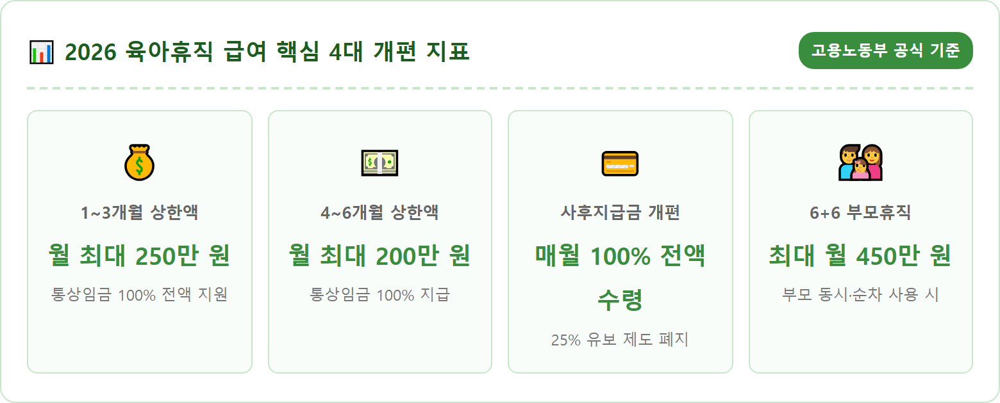
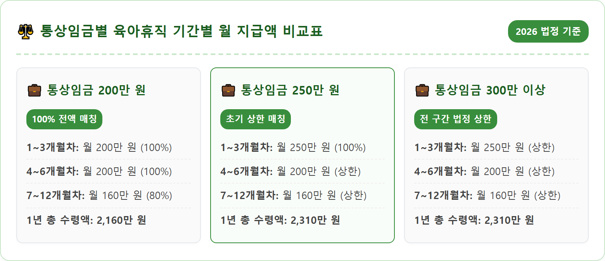
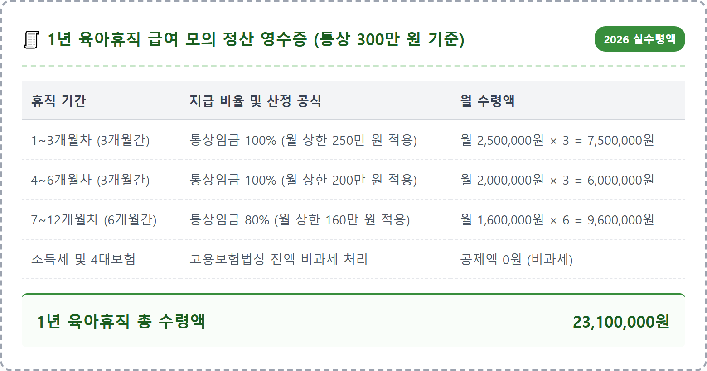
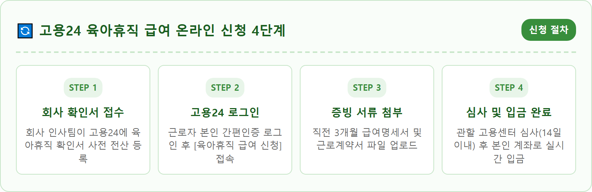
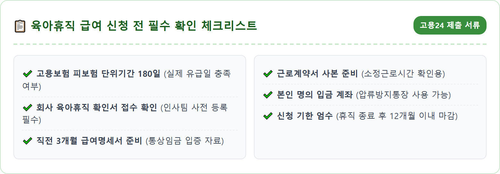
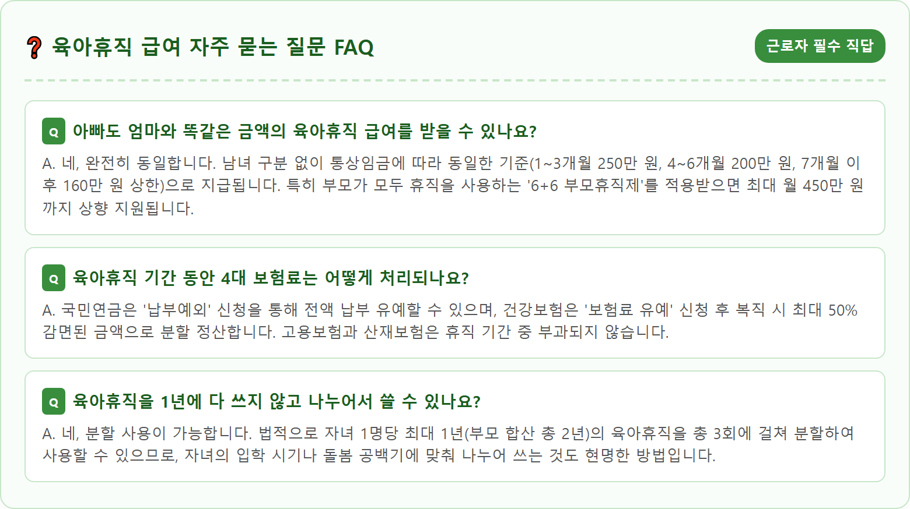

A warm, realistic, high-definition photograph of modern Korean working parents in a bright, cozy contemporary living room. A mother and father lovingly care for their adorable smiling toddler together, while reviewing a clear financial planning document on a tablet computer with smiling, confident expressions. Warm morning sunlight streams through sheer white curtains, casting a soft golden glow. The atmosphere conveys security, work-life balance, and family happiness. Natural candid documentary photography, crisp focus, 8k resolution, 1:1 aspect ratio.

아이를 낳아 기르는 직장인 부모에게 '육아휴직 급여'는 휴직 기간 동안 가정 경제를 지탱해주는 가장 중요한 버팀목입니다. 2026년 고용노동부 모성보호 제도의 가장 획기적인 변화는 그동안 월 150만 원에 묶여 있어 실수령액 감소로 휴직을 망설이게 만들었던 급여 상한액이 대폭 현실화된 점입니다.
새롭게 개편된 2026년 육아휴직 급여 체계는 휴직 초기 소득 안정을 위해 기간별 차등 인상 구조를 도입했습니다. 육아 부담과 지출이 가장 집중되는 휴직 1개월부터 3개월까지는 통상임금의 100%를 지급하며, 월 상한액이 기존 150만 원에서 무려 250만 원으로 파격 인상되었습니다.
이어지는 4개월부터 6개월까지는 통상임금의 100%를 유지하되 월 상한액 200만 원이 적용되며, 7개월차부터 12개월차까지는 통상임금의 80%(월 상한액 160만 원)가 지급됩니다. 전 기간에 걸쳐 월 최저 하한액도 70만 원으로 든든하게 보장되어, 저소득 근로자부터 중간 소득 근로자까지 실질적인 소득 대체율이 비약적으로 상승했습니다.
그렇다면 나의 실제 월급(기본급+고정 수당 등 통상임금)을 기준으로 매월 얼마의 육아휴직 급여를 통장에 받게 될까요? 육아휴직 급여는 비과세 항목으로 세금과 4대 보험료가 원천 차단되므로 실수령액 체감 효과가 더욱 큽니다.
예를 들어 세전 통상임금이 월 200만 원인 근로자의 경우:
· 1~3개월차: 통상임금의 100%인 월 200만 원 전액 지급 (상한 250만 원 이하이므로 전액)
· 4~6개월차: 통상임금의 100%인 월 200만 원 전액 지급 (상한 200만 원)
· 7~12개월차: 통상임금의 80%인 월 160만 원 지급
통상임금이 월 300만 원인 직장인의 경우:
· 1~3개월차: 월 300만 원의 100%이지만 법정 상한선이 걸려 월 250만 원 지급
· 4~6개월차: 법정 상한선에 따라 월 200만 원 지급
· 7~12개월차: 300만 원의 80%는 240만 원이지만 상한선에 걸려 월 160만 원 지급
결과적으로 1년(12개월)간 육아휴직을 사용할 경우 총 수령액은 [250만×3] + [200만×3] + [160만×6] = 총 2,310만 원에 달해 과거 1,800만 원 한도 시절보다 연간 510만 원 이상의 가계 실소득이 증가하게 됩니다.

기존 육아휴직 제도를 이용했던 부모들이 가장 큰 불편으로 호소했던 독소 조항이 바로 '사후지급금(25%)' 제도였습니다. 휴직 기간 중에는 급여의 75%만 쥐여주고, 나머지 25%는 직장에 복직하여 6개월 이상 계속 근무해야만 한꺼번에 정산해주는 방식이었습니다. 이로 인해 휴직 기간 동안 당장 분윳값과 기저귀값이 부족해 생활고를 겪는 부작용이 컸습니다.
이러한 문제점을 해소하기 위해 2026년 정부는 사후지급금 제도를 전격 폐지 및 개편했습니다. 이제는 휴직 기간 중 지급액을 깎아 유보하지 않고, 매월 산정된 육아휴직 급여의 100%를 신청 즉시 전액 지급합니다.
따라서 더 이상 6개월 뒤 복직 확인서를 내고 떼인 돈을 돌려받기 위해 전전긍긍할 필요가 없으며, 휴직 중에도 온전한 급여를 매달 통장으로 수령하여 안정적인 가계 생활을 유지할 수 있습니다. 단, 과거 제도 시행 당시 휴직하여 사후지급금이 묶여 있는 기존 휴직자의 경우 복직 후 6개월이 지난 시점에 종전 규정대로 고용24를 통해 일괄 청구하시면 됩니다.
생후 18개월 이내의 어린 자녀를 둔 맞벌이 부부라면 일반 육아휴직 급여보다 훨씬 파격적인 혜택을 제공하는 '6+6 부모육아휴직제'를 반드시 활용하셔야 합니다. 엄마와 아빠가 자녀 생후 18개월 내에 순차적으로 혹은 동시에 육아휴직을 사용하는 경우, 첫 6개월 동안 부모 각각에게 통상임금 100%를 지급하며 상한액을 매월 계단식으로 파격 인상해주는 제도입니다.
월별 상한액 인상 구조는 다음과 같습니다.
· 1개월차: 부모 각각 월 최대 200만 원 (부부 합산 최대 400만 원)
· 2개월차: 부모 각각 월 최대 250만 원 (부부 합산 최대 500만 원)
· 3개월차: 부모 각각 월 최대 300만 원 (부부 합산 최대 600만 원)
· 4개월차: 부모 각각 월 최대 350만 원 (부부 합산 최대 700만 원)
· 5개월차: 부모 각각 월 최대 400만 원 (부부 합산 최대 800만 원)
· 6개월차: 부모 각각 월 최대 450만 원 (부부 합산 최대 900만 원)
첫 6개월 동안 부모가 모두 상한선에 도달할 경우, 부부 합산으로 받을 수 있는 총급여는 무려 최대 3,900만 원에 달합니다. 아빠의 육아 참여를 적극 장려하기 위한 정책이므로 부부가 시차를 두고 번갈아 휴직을 사용하는 로드맵을 설계하시면 소득 공백 없이 최대의 지원금을 수령할 수 있습니다.

육아휴직 급여를 받기 위해서는 고용보험법에 규정된 필수 요건을 충족해야 합니다. 대상 자녀는 만 8세 이하 또는 초등학교 2학년 이하의 자녀(입양 자녀 포함)이며, 근로자가 남녀고용평등법에 따라 사업주로부터 30일 이상 육아휴직을 부여받아 사용해야 합니다.
가장 핵심적인 자격 요건은 '육아휴직 시작일 이전까지의 고용보험 피보험 단위기간이 통산 180일 이상'이어야 한다는 점입니다. 여기서 180일은 단순한 달력상의 6개월(약 180일)이 아니라, '실제로 임금을 지급받은 유급 근무일과 유급 주휴일'만을 합산한 날짜입니다.
주 5일 근무자의 경우 1주일에 유급일이 6일(근무일 5일 + 주휴일 1일)로 계산되므로, 한 달에 약 25~26일의 피보험 단위기간이 쌓입니다. 따라서 최소 7~8개월 이상 연속 근무했어야 안전하게 180일을 채울 수 있습니다. 이직한 경력이 있다면 이전 직장의 피보험 단위기간도 합산되므로 고용24에서 본인의 고용보험 가입 이력을 사전에 조회해보는 것이 안전합니다.
육아휴직 급여 신청은 과거 '고용보험 홈페이지'에서 통합 포털인 '고용24(work24.go.kr)'로 일원화되었습니다. 스마트폰 앱이나 PC 웹브라우저에서 간편인증으로 로그인한 뒤, [출산·육아] ➔ [육아휴직 급여 신청] 메뉴에서 간편하게 원스톱 접수할 수 있습니다.
신청 전 가장 먼저 진행되어야 할 절차는 '회사의 육아휴직 확인서 접수'입니다. 근로자가 휴직에 들어가면 사업장 인사 담당자가 고용24 기업 서비스에 '육아휴직 확인서(휴직 기간 및 통상임금 기재)'를 먼저 전산 등록해주어야 합니다. 회사가 등록을 완료하면 근로자의 고용24 화면에 확인서 번호가 자동으로 연동되어 뜨게 됩니다.
근로자가 직접 첨부해야 할 필수 서류는 두 가지입니다.
1. 휴직 시작일 직전 3개월간의 급여명세서 사본 (또는 임금대장): 통상임금을 입증하기 위한 서류
2. 근로계약서 사본: 소정근로시간과 고정 수당 체계를 확인하기 위한 서류
서류를 사진으로 찍거나 PDF로 업로드하면 관할 고용센터에서 14일 이내에 심사를 완료하고 본인 명의 계좌로 급여를 입금해줍니다.

육아휴직 기간 동안 가계에 조금이라도 보탬이 되고자 부업이나 프리랜서 활동, 단기 아르바이트를 고민하는 분들이 많습니다. 하지만 고용보험법상 허용 기준을 초과하는 취업 활동을 할 경우 육아휴직 급여가 감액되거나 아예 지급이 정지될 수 있으므로 엄격한 기준을 숙지해야 합니다.
고용보험법상 '취업'으로 인정되는 기준은 두 가지입니다.
1. 1주간의 소정근로시간이 15시간 이상인 경우
2. 근로시간과 무관하게 월 소득이 일정 기준(당해 연도 최저임금 기준 월 환산액 안팎, 약 150만 원 이상)을 초과하는 경우
만약 주 15시간 미만의 단순 단기 아르바이트를 하거나 소액의 프리랜서 원고료 등을 받았다 하더라도, 매월 급여 신청서 작성 시 [취업 사실 여부 및 소득 발생 신고]란에 솔직하게 체크하고 금액을 기재해야 합니다. 이를 숨기고 부정 수급할 경우 수령한 급여의 전액 환수는 물론 최대 5배에 달하는 징벌적 추가 징수금이 부과될 수 있으므로 정직하게 신고하는 것이 원칙입니다.
개인 사정이나 회사의 요청으로 당초 계획했던 휴직 기간을 다 채우지 못하고 '조기 복직'하거나 부득이하게 '퇴사'하게 되는 경우가 있습니다. 조기 복직을 하게 되면 복직일 전날까지만 일할 계산되어 육아휴직 급여가 정상 지급되며, 복직한 날부터는 회사 급여로 전환됩니다. 조기 복직 사실을 관할 고용센터에 즉시 알리고 마지막 잔여일 급여를 정산 신청해야 합니다.
만약 육아휴직 도중 퇴사하게 되는 경우에는 퇴사일까지만 육아휴직 급여가 지급되며, 퇴사 이후 잔여 휴직 기간에 대해서는 급여가 지급되지 않습니다. 개편된 2026년 제도에서는 사후지급금이 폐지되어 매월 100%를 이미 받았으므로, 중도 퇴사하더라도 이미 수령한 급여를 회사나 고용센터에 뱉어내야 하는 불이익은 발생하지 않습니다.
아울러 근로기준법 제60조에 따라 육아휴직 기간은 법적으로 '출근한 것'으로 간주됩니다. 따라서 1년간 육아휴직을 마치고 복직하더라도 출근율 80% 이상 요건을 충족한 것으로 보아, 복직 다음 날 정상적인 15일 이상의 연차유급휴가가 온전하게 발생합니다. 회사가 육아휴직을 이유로 연차휴가를 삭감하는 것은 명백한 근로기준법 위반입니다.
육아휴직 급여는 자동으로 입금되는 것이 아니라 근로자가 매월 직접 신청해야만 지급되는 '신청주의' 제도입니다. 최초 신청은 육아휴직을 시작한 날로부터 1개월이 지난 시점부터 가능합니다 (예: 11월 1일 휴직 시작 시 12월 1일부터 첫 달 급여 신청 가능).
급여 신청은 매월 1개월 단위로 신청하는 것이 원칙이지만, 번거로울 경우 2~3개월분을 모아서 일괄 신청하거나 휴직이 끝난 뒤 1년 치를 한꺼번에 몰아서 신청하는 것도 법적으로 허용됩니다.
하지만 반드시 지켜야 할 절대적인 법정 마감 시한이 있습니다. 육아휴직 급여는 '육아휴직이 끝난 날 이후 12개월(1년) 이내'에 반드시 신청해야 합니다. 휴직 종료 후 1년이 단 하루라도 경과하면 고용보험법상 제척기간 도과로 인해 미신청 급여에 대한 청구권이 영구적으로 소멸하므로, 가급적 매월 고용24 알림톡에 맞춰 따박따박 신청하시는 것을 강력히 권장합니다.


| 구분 | 2026년 개편 기준 | 비고 및 요건 |
|---|---|---|
| 1~3개월차 급여 | 통상임금 100% (월 상한 250만 원) | 초기 소득 보장 대폭 강화 |
| 4~6개월차 급여 | 통상임금 100% (월 상한 200만 원) | 월 최저 하한 70만 원 보장 |
| 7~12개월차 급여 | 통상임금 80% (월 상한 160만 원) | 비과세 소득으로 세금 없음 |
| 사후지급금 | 제도 개편 — 매월 100% 전액 지급 | 25% 유보 제도 폐지 |
| 6+6 부모육아휴직 | 부모 순차·동시 시 최대 월 450만 원 | 자녀 생후 18개월 이내 대상 |
| 신청 기한 | 휴직 시작 1개월 후 ~ 종료 후 12개월 이내 | 고용24(work24.go.kr) 온라인 신청 |